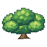
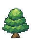
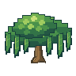
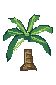

SMALL NEIGHBORS, LIVING PLACES
A quiet minute with Button.
A honey-colored whorl. Two curious feelers. A very unhurried way of seeing the world.
Loading Button…
32 × 32 native pixels · exact 8× clean view. The grid marks each native pixel; Y counts upward.

PROFESSOR NUGGET'S FIELD NOTE
The long way around a leaf.
Button has always been the slowest one to arrive and the first one to notice a new corner. During the escape, the bookcase made a quiet hiding place. Now Button rests safely in a separate care habitat at the Vet.
“Before you change a home, watch the animal who lives there. One small observation is a good beginning.”
Choose Look, Nibble or Rest to observe a small behavior.
This is an observation vignette for review. Button stays a land snail; the display adds no catching, stocking or care rules.
ROOTPORT GROVE
Space for a little world.
Broad crowns, hanging leaves and clear paths. Walk behind the new trees, inspect their roots, then try placing your own.
Walk through the garden →Build in the garden →


